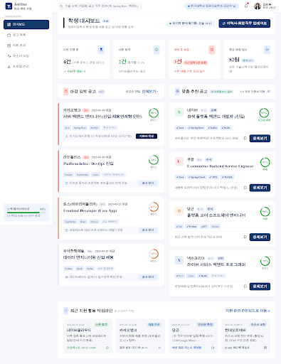
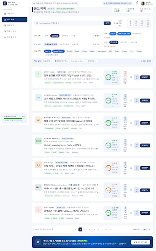
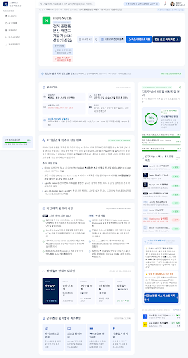
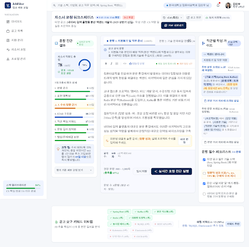
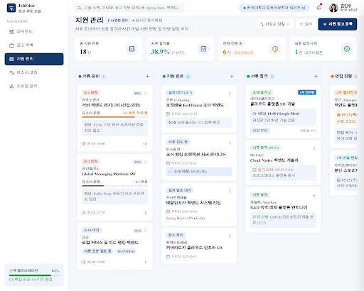
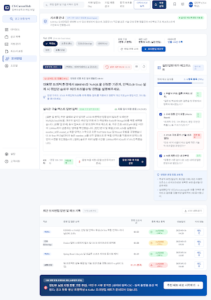
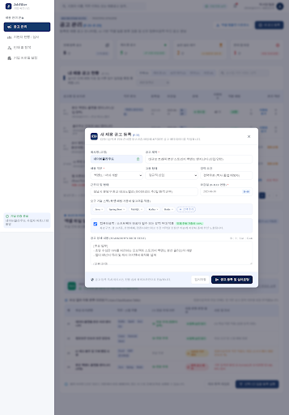
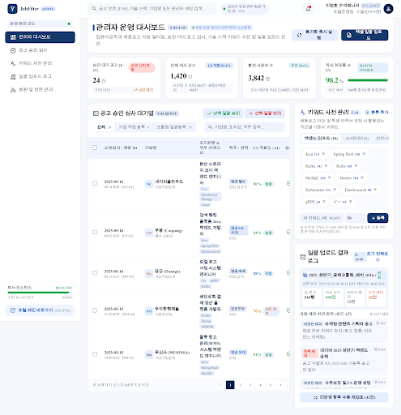
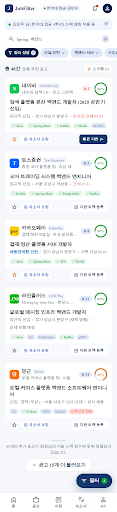

화면 목록 클릭하면 해당 화면으로 이동 · 사이드바/탭으로 화면 간 이동 가능
학생 포털

S-01 학생 대시보드 F-10
지원 현황 요약 · 마감 임박 · 맞춤 추천

S-02 공고 목록 F-11·F-13
검색 · 필터 칩 · 정렬 · 매칭 점수 · 스크랩

S-03 공고 상세 F-12
프로필 대조 매칭 분석 · 스크랩 · 칸반 등록

S-04 자소서 코칭 F-15~17·F-28·F-66
7개 가중치 진단 · 작성 가이드 · 키워드 히트맵

S-05 지원 관리 칸반 F-14
6단계 칸반 · 카드 드래그 이동 가능

S-09 규칙 기반 모의면접
타이머 · 셀프 체크리스트 · CSV 내보내기
기업 · 관리자 · 모바일

S-06 기업 공고 관리 F-31~33
공고 테이블 · 단건 등록 모달 · 엑셀 일괄 업로드

S-07 관리자 대시보드 F-41~45
승인 큐 · 키워드 사전 · 업로드 로그

S-08 모바일 뷰 N-06
하단 탭 바 · 압축형 공고 카드
팁: 각 화면은
app.js 공통 레이어로 연결되어 있습니다.
사이드바 내비게이션으로 화면을 오갈 수 있고, S-05 칸반 카드는 드래그로 단계 이동, S-04는 실시간 코칭 점수가 계산됩니다.